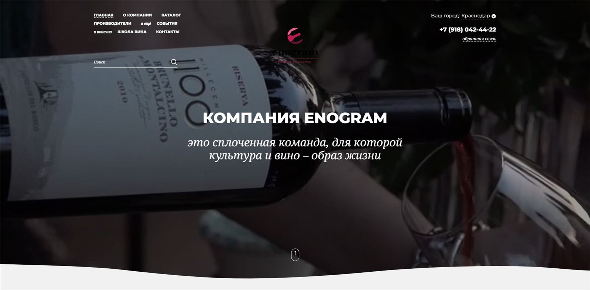
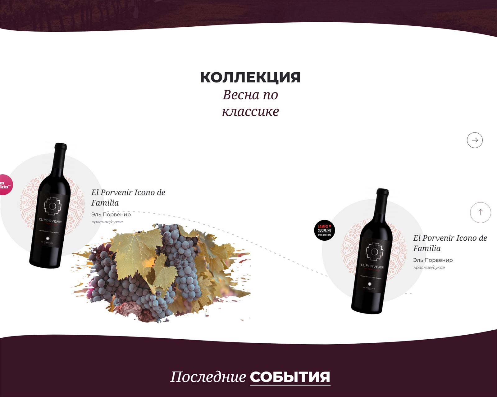
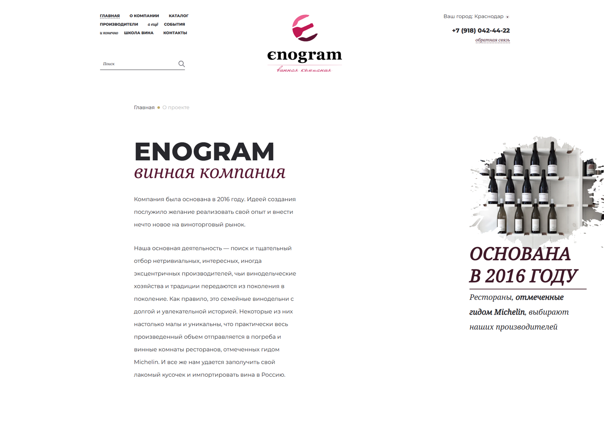
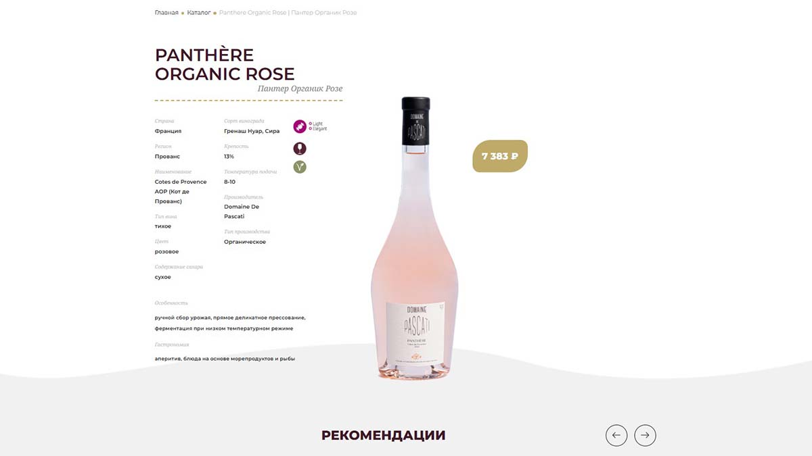
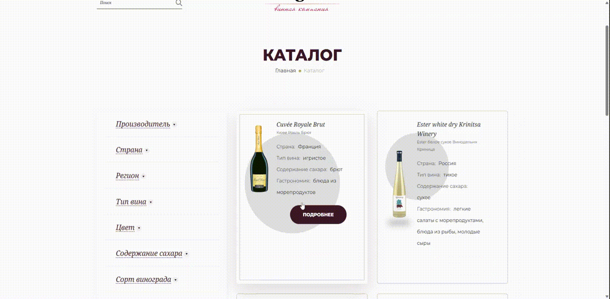
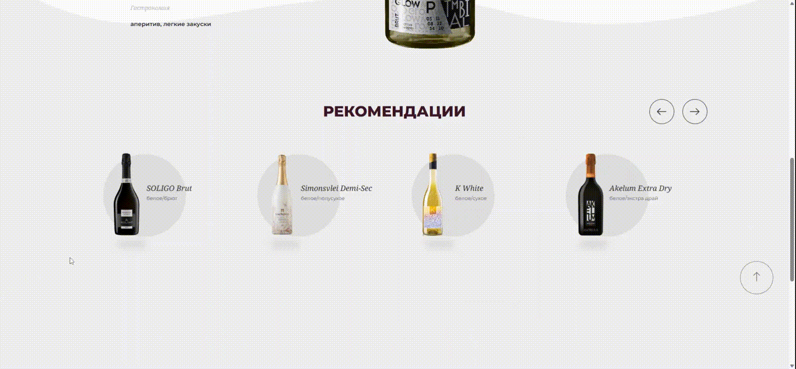

Хорошее вино не пьют сразу — ему нужно дать настояться и раскрыться. Хорошее вино не пьют сразу, ему дают время настояться. Так и мы: сайт Энограм создали ещё в 2022 году, а рассказать о нём решили только сейчас — неспешно, как и подобает настоящим ценителям.

02
Клиент
ENOGRAM — отдельный проект в структуре компании «Алкотека», специализирующийся на поставках вин из разных стран, организации винных вечеров и дегустаций, а также создании образовательного контента о вине. Это своего рода энциклопедия и визитная карточка винной культуры.
Отметим, что с «Алкотекой» наше агентство связывают годы сотрудничества: мы провели рефакторинг основного сайта, разработали мобильное приложение «Алкотека» и сделали сайт Винологии — винного бара и первого профессионального образовательного центра для кавистов и сомелье в Краснодаре, с оборудованными классами, программами обучения и дегустациями.
03
Задача
Нужно было создать с нуля презентационный сайт для каталога вин с акцентом на информативность и визуальную эстетику, без функции прямых продаж. Структурировать большой каталог, сделать удобную навигацию и поиск.
Главной сложностью стала продуманная структура каталога и фильтров: большое количество вин, много параметров и особенностей требовали консультаций с экспертами, поэтому мы обратились за помощью к кавистам и менеджерам «Алкотеки». Учились у лучших! Одновременно с разработкой ENOGRAM мы работали над сайтом «Алкотеки», поэтому детально изучили поведение пользователей и карту кликов.
Прежде чем приступить к дизайну, мы проанализировали лидеров винного рынка, включая Vivino, Wine-Searcher, Dекантер и других, чтобы вдохновиться и сделать что-то свое, легкое и запоминающееся. К брендбуку ENOGRAM, лежащему в основе концепта, мы добавили легкие цвета, винные волны и капли. Дизайн не отвлекает пользователя, а создаёт ту же атмосферу, что и звук наполняющего бокал вина, — спокойную, изысканную и притягательную.


04
Что сделали
Структура и каталог
CMS: 1С-Битрикс — надежная и гибкая платформа, на которой мы сертифицированы и регулярно работаем.
Структурировали вина в каталоге с учетом сортов, регионов и особенностей.
Сделали карточки вина, которые содержат:
Изображение бутылки
Характеристики, метод производства, рекомендации подачи, особенности вина (например, в карточке вина вы прочтете о методе прессования ягод без дробления, в течение скольких месяцев проводился аффинаж, нуждается ли выбранное вами вино в аэрации и т.д.)
Награды, подчеркивающие статус вина.
Внедрили детальные фильтры по производителям, странам, регионам, типу вина, цвета, цвету, содержанию сахара и сортам винограда.
Для удобной визуальной подачи информации использовали иконки (бокалы, декантеры, листики), отражающие специфику каждого вина.



Поиск
Внедрили поисковый движок Sphinx, который отлично справляется с трудными и длинными названиями вин.
Поиск работает быстро и гибко, позволяя пользователям быстро находить нужное вино в большом каталоге.
Визуал и атмосфера
Сделали видеоряд с натуральными кадрами винных вечеров, процессов дегустаций и атмосферы компании.
Видео органично вписано в дизайн главной страницы, усиливая презентационный эффект.
Адаптивный дизайн, оптимизация карточек для быстрого отображения и удобства пользования.
05
Результат
Получился настоящий винный справочник — энциклопедия с обширным каталогом. Как говорится, истина в вине, но и на сайте ENOGRAM ее тоже можно найти!
Сайт стал инструментом для переговоров с новыми поставщиками благодаря презентабельности и удобству. Пользователи задерживаются на ресурсе дольше, изучая вина. Дизайн способствует восприятию красоты вина, без отвлекающих элементов.
Проект ENOGRAM доказывает, что презентационный сайт может стать полноценным ресурсом для формирования репутации, увеличения доверия и создания атмосферы вокруг продукта. Сделанный с вниманием к деталям, он остаётся актуальным и востребованным спустя несколько лет после релиза.
Если вам нужно разработать или обновить сайт, и вам нужна помощь профессионалов — от идеи проекта до релиза и продвижения — обращайтесь к нам. Будем рады помочь!